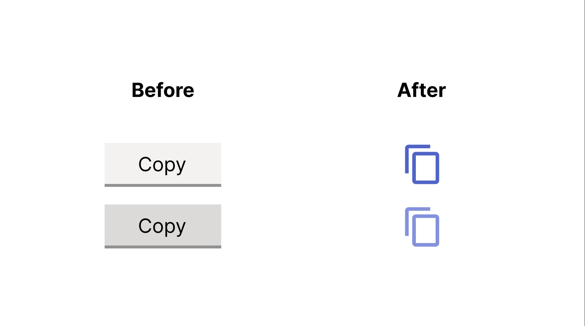
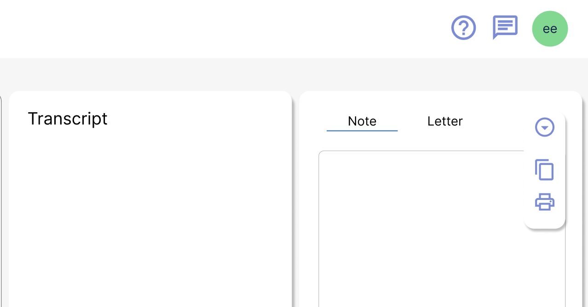
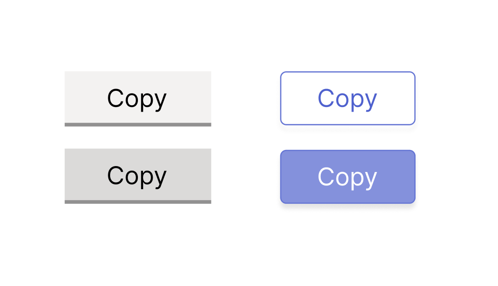
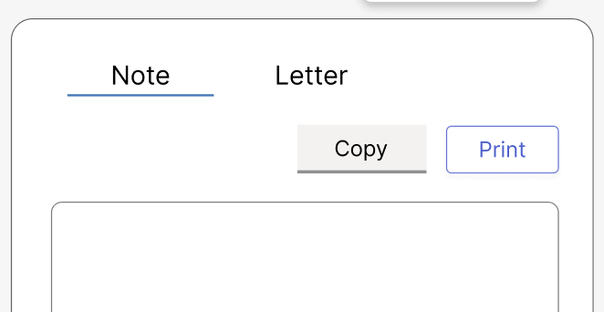
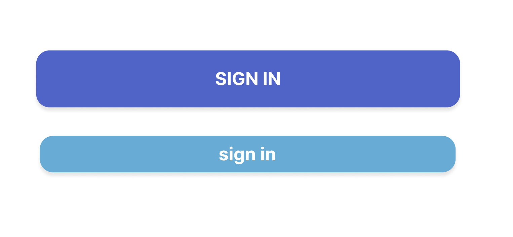
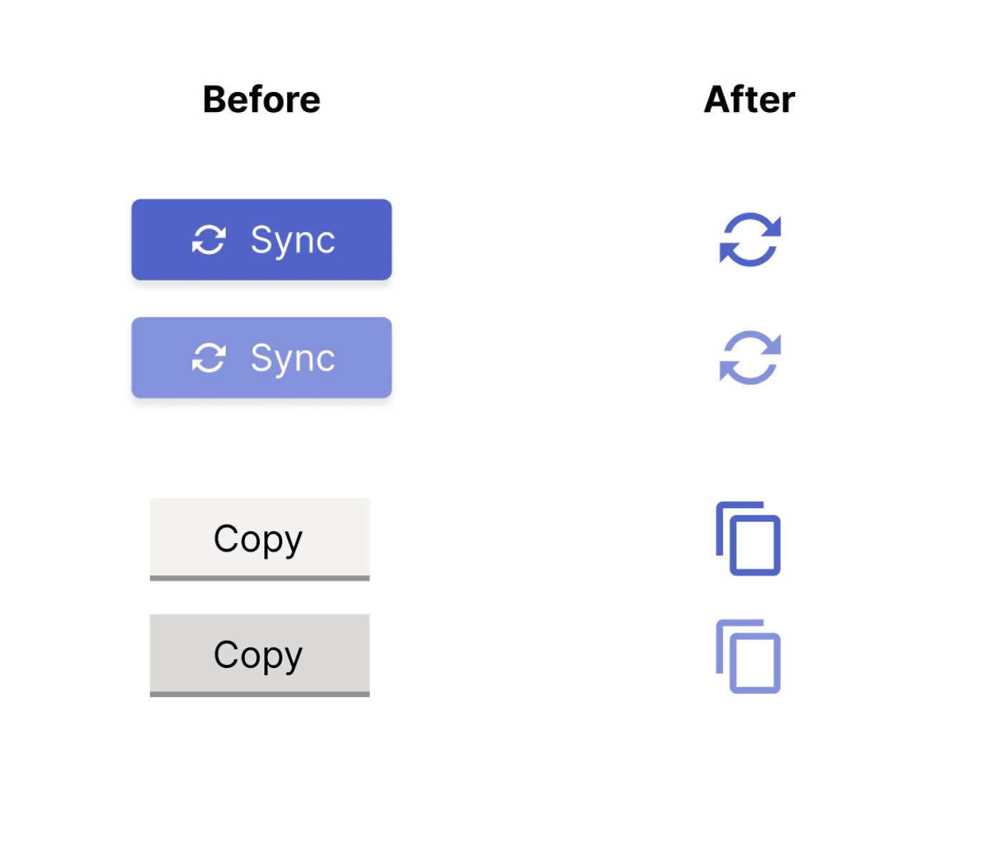
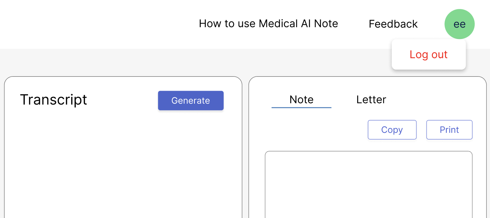
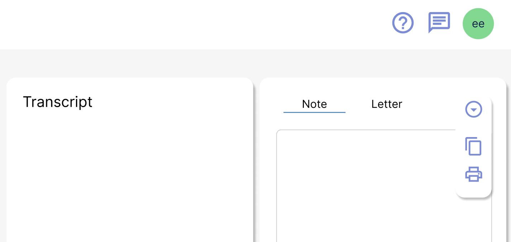

UX Design | 2025 | Internship at a Health-tech company


This healthcare technology company develops AI agent designed to reduce manual workload and improve efficiency and quality of documentation within Australia’s healthcare landscape.
As the company expanded its suite of AI scribe products, its interface became inconsistent across its applications. Similar components used different colours and had different behaviours, making it hard for busy clinicians to quickly recognise actions and navigate efficiently.
| Role | Tools |
|---|---|
| UI Designer | Figma |
| UX/UI Researcher | Material UI |
| Adobe Photoshop | |
| Team | Timeline |
| Product Lead | June - July 2025 |
| CPO |

Buttons appeared in different colours and sizes across the products.

Too many visible actions all at once.

Buttons appeared in different colours and sizes across the products.


I produced low-fidelity wireframes for:

Particularly important aspects that were considered:
This project taught me design systems’ role in creating consistent and scalable experiences across different products. It also highlights the importance of a clean design in healthcare products.
I also gained the experience of conducting pattern audits and competitor analysis, learning how they can help with creating more cohesive and unique designs.